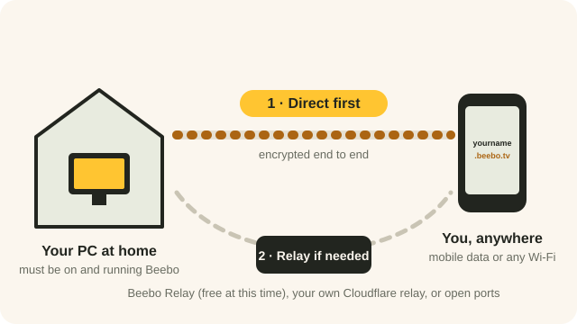

Watch away from home: your three options
Away from home, your phone reaches the PC that holds your movies through your free yourname.beebo.tv address. Beebo tries a direct connection first, and only uses a relay if a direct connection is not possible.
Beta Status: Direct connections, automatic UPnP and your own Cloudflare relay are built into the current downloads. Beebo Relay is an optional paid fallback (Beta); see the pricing page for its current status. On October 4, 2026, one real phone on another phone’s mobile data connected through Beebo Relay and played a film with no crash. It has not been tried on many networks yet. See what’s tested.

The three options
| Option | Cost | Setup | Good for |
|---|---|---|---|
| 1. Direct connection, with automatic UPnP | Free, at any resolution | None for most homes. If your router refuses, open ports by hand. | Most homes. Video goes straight from your PC to your phone. |
| 2. Your own relay (Cloudflare) | Free from Beebo. Cloudflare’s own free allowance covers most families, and Cloudflare bills you directly beyond it. | About ten minutes, once. Step-by-step guide. | Networks where direct cannot work. |
| 3. Beebo Relay | Optional fallback. Beta; paid plans are Planned and not available to buy yet; see pricing. | A choice in Settings › Internet connection & relay, plus a subscription. | Homes where options 1 and 2 both fall short. Details. |
UPnP is a feature of most home routers. It lets Beebo ask your router to let it through, so you usually do not have to change any router settings yourself. A relay is a go-between computer on the internet that passes the video along when your phone and your PC cannot reach each other directly.
Beebo only uses a relay when a direct connection fails. A direct connection never touches one.
What it costs
Beebo Entertainment is free to use at home. Away-from-home access is also free with a direct connection, automatic UPnP, or your own relay, at any resolution. Beebo Relay, Beebo's own relay servers, is an optional fallback for households where none of those work. It is in Beta and works today, but paid plans are Planned and not available to buy yet; see the pricing page. No payment card required to get started.
Step by step
-
Keep the PC on and signed in to Beebo
Away-from-home viewing works through your PC. It has to be switched on, awake and running Beebo, signed in to your Beebo account. When it is off or asleep, nothing can stream from it.
What you’ll see: On Beebo’s Get Started screen, step 5, Watch away from home, shows your address and a QR code. It says “It’s online now.” once the address is live, a few seconds after Beebo starts.
-
Run the two-part connection test
On the PC, open Get Started. Below the numbered steps, find Test your connection and click Test with your phone. Later on, you can run it again from Settings › Internet connection & relay › Re-run test.
Test 1 checks watching at home. Test 2 checks watching away from home. For Test 2, turn Wi-Fi off on your phone so it uses mobile data. Then open the Beebo app (or scan the code to open your address), sign in and start any video.
What you’ll see: Live status lines: “Your phone connected. Direct connection.” or “Your phone connected. Through Beebo Relay.” or “Your phone tried to connect but couldn’t get through.”
Screenshot coming. The Test your connection wizard, Test 2: Watch away from home.
-
Read the result
You’re all set means the phone connected directly, and there is nothing else to do. Looks good so far means your router opened Beebo’s ports by itself; do the phone test to be sure. Your home network blocks direct connections means you need to change a router setting or use a relay.
Two automatic hints can appear on the way: “Your home has two routers in a row” and “Your internet provider shares one internet address between many homes”. Both mean direct connections from outside probably will not work. Fix connection problems explains what to do.
What you’ll see: A headline such as “You’re all set”, “Your home network blocks direct connections” or “It works through your own relay”.
-
Pick an option if direct does not work
The result screen offers four choices: Beebo Relay, Cloudflare only (your own account, marked advanced), Open ports on my router, and Home only for now. You can change your mind at any time in Settings › Internet connection & relay › Change option.
Home only costs nothing and needs no setup, but watching away from home may not work.
What you’ll see: Each choice has a “How to set it up” panel and, where money is involved, what it would cost.
-
Test again
After any change (a router setting, a relay), run Test 2 again from a different network, such as mobile data.
What you’ll see: The same status lines, now showing your new route.
What a relay can see
A relay forwards your traffic. Transport encryption and who can decrypt content depend on the connection route; a generic relay label is not a guarantee of end-to-end encryption. It can see the internet (IP) addresses of your home and of the viewer’s device, when a connection starts and stops, and how much data passes through. Your own Cloudflare relay handles the same kind of information under your own agreement with Cloudflare.
Separately, Beebo’s service (beebo.tv) helps your phone find your PC and signs people in. Your library and video do not go through it. The privacy page has the plain-words summary, and the privacy policy has the details.
If something goes wrong
The address will not load away from home
First check that the home PC is on, awake and running Beebo. If it is, run the connection test above. Fix connection problems has the full checklist.
Does watching away from home use my mobile data?
Yes. Off Wi-Fi, video streams over mobile data like any streaming app. In the player, the gear button lets you pick 720p or 480p to use less, and the Android app can download titles over Wi-Fi first so you can watch them offline.
Do I need to forward ports on my router?
Usually not. Beebo asks the router to let it through by itself, using router features called NAT-PMP and UPnP. Only if that fails do you need to forward UDP ports 47820–47829 by hand.
Can everyone in my family watch away from home?
Away access is set per person by the owner. New accounts follow a default the owner can choose, and pending or revoked accounts still need approval. See Family and profiles.
Related pages
Written for Beebo for Windows 0.1.58 and the Beebo Android app 1.40, as of Sep 21, 2026, 4:54 PM Eastern. Status notes on this page were last checked on Oct 5, 2026, 6:54 AM Eastern, against Beebo for Windows 0.1.79 and the Android test build 1.51-tester11 (build 61). Found something that doesn’t match what you see? Tell us at testers@beeboentertainment.com. It is a plain email, with no form and no sign-up.